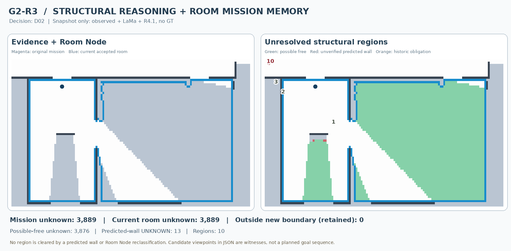
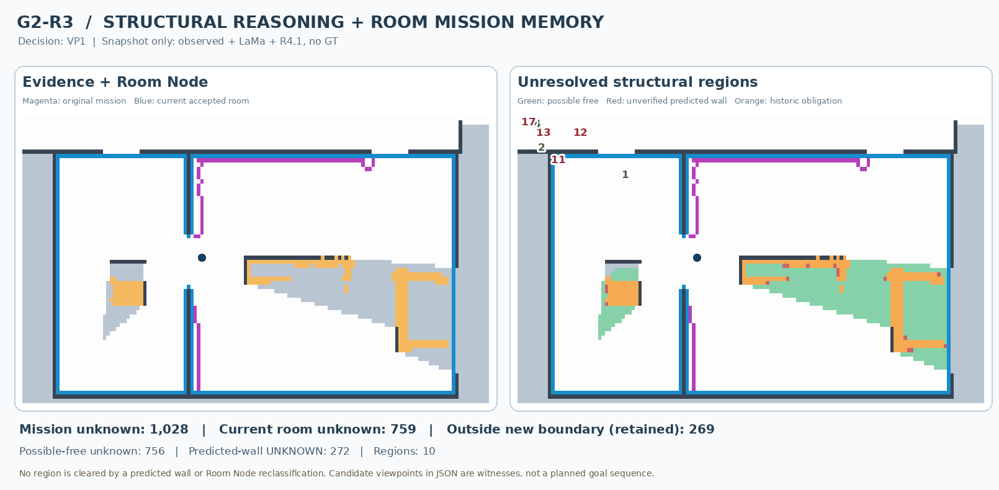
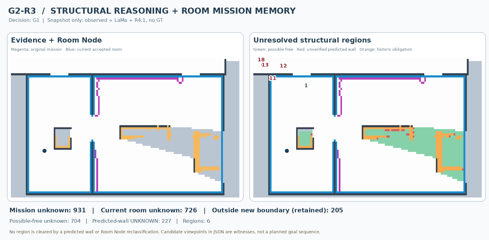
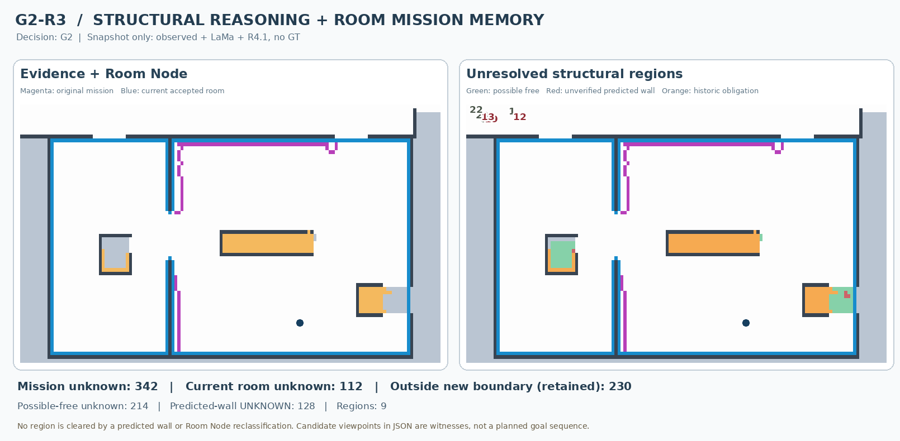
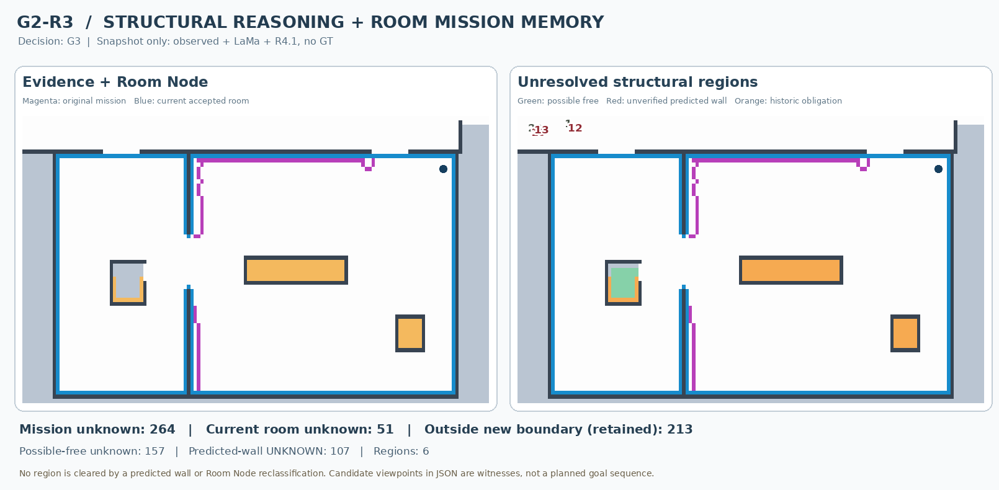

D02 → VP1 → G1 → G2 → G3; observations are taken only from the previously frozen offline simulated path. No GT or future scans are fed to the R3 reasoning algorithm. Figures are diagnostics, not newly selected robot routes.
Historical unknown outside current Room Node: 0 · Possible free: 3876 · Unverified predicted wall: 13. These are current-map predictions, not GT.

| Region ID | Unknown cells | Outside current room | Candidate viewpoints | Best witness viewpoint* |
|---|---|---|---|---|
| #1 | 3381 | 0 | 108 | (15.1, 18.3) m; 7.6 m |
| #2 | 405 | 0 | 103 | (10.3, 17.5) m; 3.6 m |
| #3 | 90 | 0 | 38 | (13.5, 17.1) m; 4.8 m |
* Witness means potentially informative observation from an already-known-free route, not an optimized or committed G2 goal. Small regions and predicted-wall unknown remain in the full JSON report.
Historical unknown outside current Room Node: 269 · Possible free: 756 · Unverified predicted wall: 272. These are current-map predictions, not GT.

| Region ID | Unknown cells | Outside current room | Candidate viewpoints | Best witness viewpoint* |
|---|---|---|---|---|
| #1 | 666 | 0 | 146 | (18.7, 19.6) m; 8.0 m |
| #2 | 53 | 0 | 140 | (9.9, 18.0) m; 5.2 m |
| #6 | 23 | 0 | 180 | (13.5, 17.2) m; 0.4 m |
* Witness means potentially informative observation from an already-known-free route, not an optimized or committed G2 goal. Small regions and predicted-wall unknown remain in the full JSON report.
Historical unknown outside current Room Node: 205 · Possible free: 704 · Unverified predicted wall: 227. These are current-map predictions, not GT.

| Region ID | Unknown cells | Outside current room | Candidate viewpoints | Best witness viewpoint* |
|---|---|---|---|---|
| #1 | 654 | 0 | 116 | (19.0, 19.2) m; 11.8 m |
| #6 | 50 | 0 | 120 | (14.2, 16.8) m; 5.6 m |
* Witness means potentially informative observation from an already-known-free route, not an optimized or committed G2 goal. Small regions and predicted-wall unknown remain in the full JSON report.
Historical unknown outside current Room Node: 230 · Possible free: 214 · Unverified predicted wall: 128. These are current-map predictions, not GT.

| Region ID | Unknown cells | Outside current room | Candidate viewpoints | Best witness viewpoint* |
|---|---|---|---|---|
| #1 | 81 | 81 | 0 | No currently knownfree viewpoint in sample |
| #11 | 55 | 0 | 147 | (20.6, 19.2) m; 3.4 m |
| #6 | 51 | 0 | 158 | (12.2, 15.6) m; 8.8 m |
| #20 | 25 | 25 | 0 | No currently knownfree viewpoint in sample |
* Witness means potentially informative observation from an already-known-free route, not an optimized or committed G2 goal. Small regions and predicted-wall unknown remain in the full JSON report.
Historical unknown outside current Room Node: 213 · Possible free: 157 · Unverified predicted wall: 107. These are current-map predictions, not GT.

| Region ID | Unknown cells | Outside current room | Candidate viewpoints | Best witness viewpoint* |
|---|---|---|---|---|
| #1 | 81 | 81 | 0 | No currently knownfree viewpoint in sample |
| #6 | 51 | 0 | 180 | (12.7, 15.9) m; 10.4 m |
| #20 | 25 | 25 | 0 | No currently knownfree viewpoint in sample |
* Witness means potentially informative observation from an already-known-free route, not an optimized or committed G2 goal. Small regions and predicted-wall unknown remain in the full JSON report.
Final note: Structural diagnostics PASS does not establish end-to-end exploration or optimize the length of a viewpoint sequence. Unknown cells are never cleared by predictions alone.